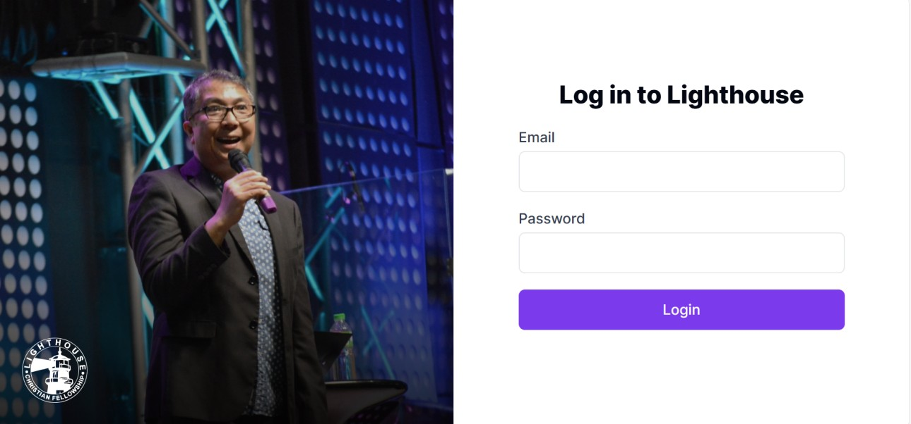
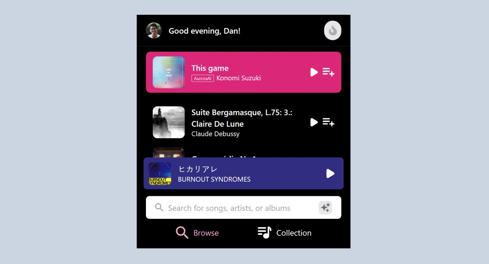
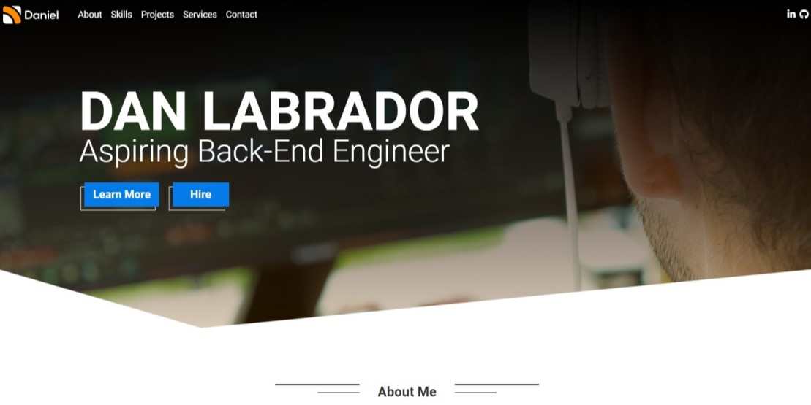

Hey friends —
I'm a data-focused analyst specializing in data quality and analytics, with 2 years of experience in IT. As an IT Reports Specialist 2 at My Amazon Guy, I am responsible in identifying actionable business insights our management can utilize to inform their decision-making processes. While my role is primarily in data analytics, it also involves aspects of data engineering and data science.
I'm passionate about building data-driven solutions that fuel growth. To advance my expertise, I'm currently pursuing the MITx MicroMasters® Program in Statistics and Data Science. I aim to dive deeper into predictive modeling and data science applications for business optimization.
Fun fact: I started my tech journey by co-managing the Discord IT infrastructure for Vatic, a Clash of Clans community formerly known as Vista Ridge.
You can reach me at dan@danlabrador.com or fill out this form.
Technical Skills
-
Data Analytics & Visualization
I specialize in transforming raw data into actionable insights using SQL, BigQuery, and Looker Studio. I build interactive dashboards that help businesses make data-driven decisions.
-
Report Automation
I have experience in automating reports and data workflows using Python, BigQuery, and SQL, improving efficiency and accuracy in business operations.
-
API Data Integration
I have implemented API rate limiters and integrated external data sources into business pipelines using Python and BigQuery, ensuring data integrity and compliance.
-
Collaboration & Version Control
I have experience working in cross-functional teams using Git, GitHub, and GitLab for version control and efficient workflow management.
Projects
These projects come from my time in the Uplift Code Camp's Full-Stack Web Development boot camp. I will have this replaced with more data science projects soon.
-
Credence
Credence is a full-stack application built for organizations to issue, store, and verify digital certificates. It is a project that I made with a team of 4 developers. I was responsible for the project management, code review and quality assurance.
-

School of Leaders Portal
A front-end project that I made for our local church. It is a Student Information System that allows the church to manage the students' information and grades. This project is still in progress and will be hooked to a backend system.
-

AuroraBeats Playlist Manager
A culmination of a weekend's worth of learning and coding, the AuroraBeats Playlist Manager is my solo project that interfaces with Spotify to manage playlists. It showcases my journey through OAuth, design in Figma, and development with vanilla JavaScript and Tailwind CSS.
-
API Request Throttlers
The API Request Throttlers for Python project provides tools to help manage and control the rate at which API requests are made, ensuring compliance with rate limits and preventing overwhelming the server. The project includes classes for throttling requests, applying exponential backoff, and handling retries for transient errors.
-

daniellabrador.com (v1)
This was my first attempt at creating a personal website that was made last 2021.
Experience
-
Apr 2024 — Present
IT Reports Specialist 2 ∙ My Amazon Guy
- Executive-Level Reporting: Built Looker Studio dashboards powered by BigQuery and SQL that improved financial and operational visibility, directly supporting C-level decision-making. Notable projects include providing insights on client communications, burn rate, and ROI.
- Data Pipeline Optimization: Enhanced multiple Python-based reports automation, reducing processing time from 1.5 hours to 3 minutes per report leveraging BigQuery computation servers.
- API Rate Limit Management: Designed and implemented a Python-based API rate limiter for HubSpot, Slack, Asana, and other third-party platforms and libraries, preventing data loss and improving API efficiency.
- HubSpot CRM & Sales Data Analysis: Analyzed HubSpot CRM data to identify operational inefficiencies and opportunities.
- Process Automation: Automated key financial and marketing reports using Python, Zapier, and HubSpot, eliminating manual reporting inefficiencies.
-
Jun 2023 — Apr 2024
IT QA Specialist 2 ∙ My Amazon Guy
IT QA Specialist 1
- Reduced IT System Incidents: Upon the introduction of the IT QA team, we reduced our major IT system incidents occurrence interval by 94.3% (from every 3.5 days to 68 days) by implementing a comprehensive quality assurance framework, which resulted in significantly enhanced system stability and reliability.
- Standardized QA Practices: I authored and helped enforce the organization's first manual software testing process SOP, which standardized and clarified QA practices across the team, improving QA activities' consistency and quality.
- High Volume of QA Tickets: I completed 642 manual QA tickets (since October 2024, when we started tracking ticket counts) by applying robust manual testing methods, which ensured critical systems like the Churn Rate and Burn Rate reports were thoroughly vetted before deployment.
Education
-
2025 — Present
MITx MicroMasters® Program in Statistics and Data Science (Methods Track) ∙ Massachusetts Institute of Technology
This graduate-level program prepared by MIT provides an in-depth knowledge of data science and time series analysis and teaches how to conduct rigorous analysis that inform decision-making processes and contribute to evidence-based practices across industries.
- Probability: Builds foundational knowledge of data science with this introduction to probabilistic models, including random processes and the basic elements of statistical inference.
- Machine Learning With Python: Provides an in-depth introduction to the field of machine learning and reinforcement learning, through hands-on Python projects.
- Statistics: Develops a deep understanding of the principles that underpin statistical inference: estimation, hypothesis testing and prediction.
- Time Series with Interventions: Offers practical knowledge on building machine learning algorithms to process and analyze unstructured data, including unsupervised methods like clustering and supervised techniques such as deep neural networks.
- Time Series and Intervention: Discusses time series analysis, from learning structured models to predictions and reinforcement learning, with hands-on projects.
-
Oct 2024 — Present
BSc Computer Science ∙ University of London
This undergraduate program prepared by the faculty of Goldsmiths, University of London teaches the fundamentals of computer science and helps master in-demand programming, mathematical and computing skills through project-based modules.
With the data-science specialism, the program aims to equip its students the necessary skills to be a data scientist. This will include learning about artificial intelligence, data analytics and machine learning.
-
Jan — Jun 2024
Full-Stack Web Development ∙ Uplift Code Camp
Completed an intensive full-stack web development bootcamp, mastering both frontend and backend technologies. Built and deployed full-stack applications using MongoDB, Express.js, React.js, and Node.js (MERN stack), while gaining expertise in RESTful APIs and database management.
- Scalable Software Design: Applied Object-Oriented Programming (OOP) and Model-View-Controller (MVC) design patterns to create maintainable and modular applications.
- Data Engineering Foundations: Developed a strong understanding of data structuring and querying in MongoDB, which translates well to relational databases like SQL and BigQuery.
- Backend API Development: Designed and implemented secure, high-performance APIs using Node.js and Express.js, emphasizing scalability and data integrity.
Articles
-
How to Manually Test Low-Code / No-Code Systems
In My Amazon Guy, our IT infrastructure is diverse and integrated in nature. They primarily revolves around platforms such as Zapier, HubSpot, Slack, and Asana. I wanna share how our team efficiently navigating the complexities of our QA processes inherent in our systems.
-
Building a Playlist Manager with Vanilla JavaScript & Tailwind CSS
Over one weekend, amidst university and work, I embarked on building a Playlist Manager app with Spotify. Facing the unexpected OAuth challenge without prior instruction, my journey through extensive documentation and design foresight became a testament to self-reliance and the importance of pre-planning.
-
What I Learned After Deleting Tons of React Files
Explore how I streamlined my React development workflow with essential tips for beginners. From organizing folder structures to leveraging external libraries, discover practical strategies to boost productivity and enhance React skills.
Contact
Feel free to reach out to me on LinkedIn, send me an email at dan@danlabrador.com, or fill out this form. I would love to talk about technology, data science, and how we can work together.